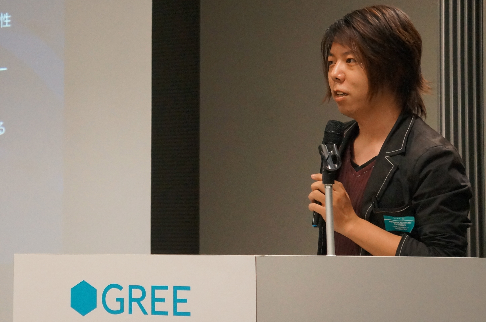

Akira Takahashi

Akira Takahashi
Born March 1, 1985 Miyagi-ken. Japan
Affiliations
- LongGate CO.,LTD.
- boostjp community core member
- cpprefjp community core member
- P-Stade C++ Libraries manager
- Boost Geometry Library contributor
- Boost.StudyMeeting organizer
Blogs
GitHub Repository
Contact
- Personal mail address : faithandbrave@gmail.com
- My Company mail address : faithandbrave@longgate.co.jp
- Twitter : @cpp_akira
Skill in Programming Language
C++, Haskell, Scala, C#, Objective-C++, Ruby, PHP.
Fields of Programming
Metaprogramming, Object-Oriented Programming, Functional Programming, Generic Programming, Multi-Paradigm Design, EDSL, Domain Driven Development, Game Programming, Network Programming, Parallel Programming, Syntax Analysis, Image Processing, Testable Design, Syntactic Analysis, Asynchronous Processing, Coroutine.
Fields of Management
Agile、Unified Process。
Interested in Programming Skills (2013/10/16)
Parallel Program Abstraction, GPGPU, Functional Reactive Programming, Distribution Processing, Graph Theory, Image Recognition, Statistics。
Study Meeting Activities
Use Web Servies
Pictures


Wankuma Study Meeting in Tokyo #22 - "C++0x - Talking about the future of the language"


Developers Summit 2010 "C++0x, Ruby, ECMAScript5 About International Standardization"

Boost.StudyMeeting #6 in Sapporo

GREE Tech Talk #05